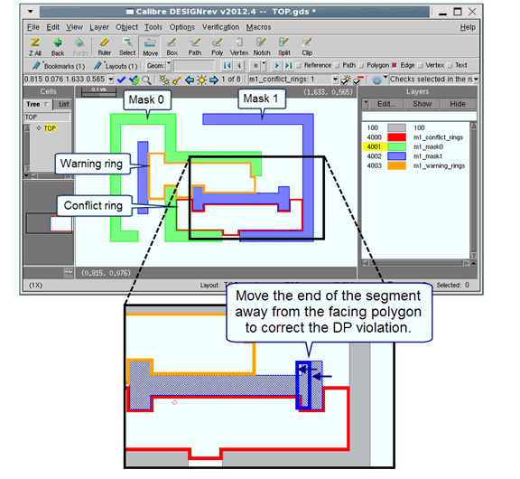
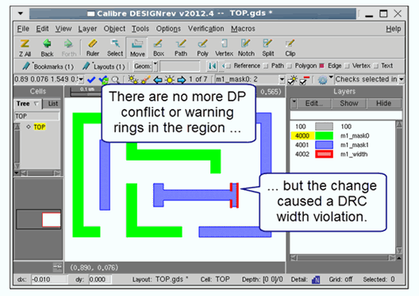

Debugging Double Patterning Results with Calibre RealTime Custom
A typical Double Patterning (DP) rule file derives layers for each mask and for the conflict and warning rings associated with a DP violation. Debugging a DP violation involves testing various possible fixes to the layout and choosing the optimum fix. This process is made easier with Calibre RealTime Custom because you can immediately see the results of a layout change.
To do DP debug with Calibre RealTime Custom, you output each mask and the warning and conflict layers as rule checks, so that the layers are output as results in Calibre RealTime Custom. Then, you assign highlight colors to each rule check using DRC Rule Check Comments for Calibre RealTime Custom — this step makes it easy to interpret the results.
When you run Calibre RealTime Custom, the mask layers and warning and conflict rings are easily identified by their highlight color (typically red for conflict and yellow for warning). When you make a layout change in order to fix a DP violation, you can easily see whether the violation was fixed or if it caused new violations.
Prerequisites
Calibre RealTime Custom Requirements are met.
A DP rule file that outputs each mask layer and the conflict and warning layers as rule checks. The following rule file excerpt shows an example:
// ... m1_mask0 and m1_mask1 layer derivations m1_mask0 { @ Decomposed shapes for m1 mask0 COPY m1_mask0 } m1_mask1 { @ Decomposed shapes for m1 mask1 COPY m1_mask1 }// ... layer derivation for m1_conflict layer m1_conflict_rings { @ odd number of polygons interacting @ with each other COPY m1_conflict_rings }// ... layer derivation for m1_warning layer m1_warning_rings { @ warning that edits in this direction will @ cause the DP violation ring to expand COPY m1_warning_rings } // a DRC width check m1_width { @ width check for M1 metal INT M1 < 0.025 } // ... rest of rule file
Procedure
- Click the Options button
(
 ) to open the Calibre
Options dialog box.
) to open the Calibre
Options dialog box. - (Optional) Enable “Run DRC on Edit” if it is available in your integration.
- Specify the “Rule file.”
- Enable the checkbox for “CTO file” and specify the CTO (Check Text Override) file.
- If necessary, specify a “Layer map file.” See “Layer Maps in Calibre RealTime”.
- (Optional) Set other options; see the description of the Calibre Options dialog box in the chapter for your design tool.
- (Optional) Select the “Check selection recipe” in the dropdown list. The default recipe (Checks selected in the rule file) may be appropriate for your rule file, or you can select a different check recipe. See “Check Recipes in Calibre RealTime Custom” for more information.
- Click OK to close the dialog box.
- Click
 (or
(or  in Pyxis Layout) in the Calibre RealTime
Custom toolbar to start a DRC run on the window.
in Pyxis Layout) in the Calibre RealTime
Custom toolbar to start a DRC run on the window. The following figure shows results for a design with the rule file excerpt shown in the Prerequisites. One conflict and one warning ring are reported. The warning ring indicates the area to avoid when making layout changes to fix the DP violation.
Figure 1. Double Patterning Results in Calibre RealTime Custom - Correct the violation, as
shown in the inset for the preceding figure.
If “Run DRC on Edit” is not enabled, Click
or to start another run. (With
“Run DRC on Edit” enabled, new results from a design edit are shown
immediately)Results are shown in the next figure. For this example, the change fixed the double patterning error, but introduced a DRC width error (m1_width).
Figure 2. Double Patterning Fix in Calibre RealTime CustomIf the layout change causes new or different DP violations, these are shown immediately as new conflict and warning rings. The immediate feedback in Calibre RealTime Custom allows you to try several possible fixes for a DP violation, and then choose the best fix.